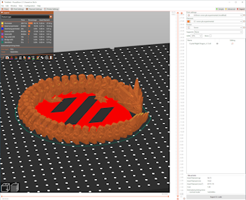

First off you'll need to choose what printer and materials you will be using. A good place to start would to think about the type of printing you want to do. For example will you be printing functional parts or just pretty things that need lots of detail?
Material
PLA is ideal for beginners and environmentally conscious users, PETG offers durability and versatility, ABS provides strength and heat resistance, while SLA resins deliver high-resolution prints with intricate details. Choosing the right material depends on the specific requirements of your project, including strength, durability, surface finish, and application.
For more information on materials reference this section of the main page.
Printer
FDM is valued for its affordability, ease of use, and versatility, making it suitable for a wide range of applications. SLA, on the other hand, is prized for its high resolution, precision, and surface finish, making it ideal for applications that demand exceptional detail and quality. The choice between FDM and SLA depends on factors such as budget, application requirements, and desired print quality.
Software Setup
Next is to setup the software you'll be needing to 3D print. The usual workflow for printing is you find or make a model of the odject you would like to print, then take that model usualy in the form of a .stl and open it in what is called a slicer. This is what preps the model for printing. Basically the slicer will turn the model into several 2D layers in a format the printer understands so that it may build the object layer by layer.
Choosing a slicer is mostly a matter of preference as most of them are very good but the most popular one would be PrusaSlicer. Also you can refer to this list for a quick introduction to some of the most popular options.

Source from myself
After the slicer is installed there will likely be a first time setup promting you for the printer you have a good place to start is to simply accept all the default settings for your printer. Once that is taken care of move on to the one thing that will almost certainly need tuning (depending on your printer of choice) before you can get anything printed, setting up the z-offset.
First Prints
Your're almsot there! but first if you got a cheaper, older, or decided to build your own you will probably have to setup your z-offset. This is different for many printers so you'll need to find out the process for yourself on this one. Definitely take your time on this and get it right the first layer is by far the most important you want it as perfect as possible.
Once that first layer is looking good why not go for the typical 3d Benchy as your first print is is kind of a tradition and it is made specifically to test all kinds of aspects of the printing process.